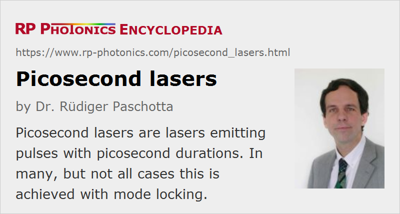

Picosecond Lasers
Definition: lasers emitting pulses with picosecond durations
Alternative term: ultrafast lasers
More general terms: pulsed lasers, mode-locked lasers
German: Pikosekundenlaser
Categories: lasers, light pulses
How to cite the article; suggest additional literature
Author: Dr. Rüdiger Paschotta
A picosecond laser is a laser which emits optical pulses with a duration between 1 ps and (usually) some tens of picoseconds. It thus also belongs to the category of ultrafast lasers or ultrashort pulse lasers.
Sometimes, other laser-based sources for picosecond pulses – for example synchronously pumped OPOs – are also called picosecond lasers, even if they are strictly speaking no lasers.
A variety of laser types can generate picosecond pulses, with other performance parameters varying in wide ranges:
- The most common sources are actively or passively mode-locked solid-state bulk lasers. These can provide very clean (transform-limited and low-noise) ultrashort pulses with pulse repetition rates varying from a few megahertz to more than 100 GHz. For example, a passively mode-locked Nd:YAG or vanadate laser can easily generate e.g. 10-ps pulses with several watts of output power, and thin-disk lasers can generate many tens of watts in shorter pulses.
- Mode-locked fiber lasers can also cover a wide range of repetition rates from a few megahertz up to more than 100 GHz (with harmonic mode locking). Particularly with MOPA or MOFA systems, very high average output powers are possible. The pulse quality from such sources varies; for example, the pulses may or may not be close to bandwidth-limited.
- Lower repetition rates are possible with an additional pulse picker and also allow for amplification to higher pulse energies e.g. with a regenerative amplifier, possibly using chirped-pulse amplification. Cavity dumping of a mode-locked laser is another option.
- Laser diodes can be mode-locked for picosecond pulse generation (→ mode-locked diode lasers). This leads to compact sources with typical pulse repetition rates between 1 GHz and hundreds of gigahertz. However, the pulse energy is severely limited, and the pulse quality is not always high.
- Laser diodes can also be gain-switched with carefully designed electronics to achieve pulse durations of well below 1 ns, sometimes even below 100 ps. This leads to very compact and potentially cheap sources, and another advantage is that the pulse repetition rate can easily be varied in a very wide range simply via the driver electronics.
- Although Q-switched lasers typically generate nanosecond pulses, Q-switched microchip lasers can reach pulse durations far below 100 ps.
- More exotic sources of picosecond pulses are free electron lasers, which can provide high pulse energies even in extreme wavelength regions.
Compared with femtosecond lasers, picosecond laser sources are often more economical. In applications such as micromachining, they offer similar performance.
Suppliers
The RP Photonics Buyer's Guide contains 73 suppliers for picosecond lasers. Among them:
Questions and Comments from Users
Here you can submit questions and comments. As far as they get accepted by the author, they will appear above this paragraph together with the author’s answer. The author will decide on acceptance based on certain criteria. Essentially, the issue must be of sufficiently broad interest.
Please do not enter personal data here; we would otherwise delete it soon. (See also our privacy declaration.) If you wish to receive personal feedback or consultancy from the author, please contact him e.g. via e-mail.
By submitting the information, you give your consent to the potential publication of your inputs on our website according to our rules. (If you later retract your consent, we will delete those inputs.) As your inputs are first reviewed by the author, they may be published with some delay.
See also: mode-locked lasers, mode locking, ultrafast lasers, femtosecond lasers, ultrashort pulses, nanosecond lasers, solid-state lasers, mode-locked fiber lasers
and other articles in the categories lasers, light pulses
|  |
If you like this page, please share the link with your friends and colleagues, e.g. via social media:
These sharing buttons are implemented in a privacy-friendly way!